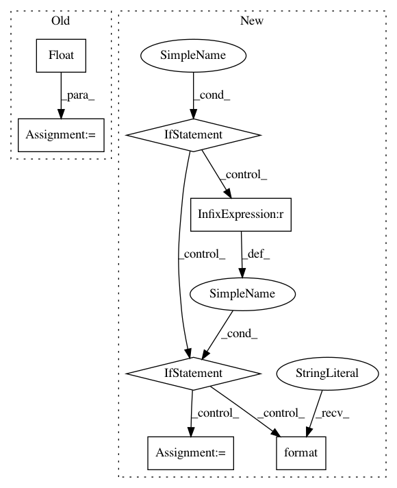

82a059d89d5f5ebc77c6a3f0b8ac4072a3979104,tensorforce/core/networks/layer.py,Nonlinearity,__init__,#Nonlinearity#Any#Any#Any#Any#Any#Any#Any#,201
Before Change
self.min = float(min)
if alpha is not None:
self.alpha = float(alpha)
if beta == "learn":
self.beta_learn = True
After Change
padding: Pooling padding, one of "VALID" or "SAME".
self.pooling_type = pooling_type
if isinstance(window, int):
self.window = (1, window, window, 1)
elif len(window) == 2:
self.window = (1, window[0], window[1], 1)
else:
raise TensorForceError("Invalid window {} for pool2d layer, must be of size 2".format(window))
if isinstance(stride, int):
self.stride = (1, stride, stride, 1)
elif len(window) == 2:
self.stride = (1, stride[0], stride[1], 1)
In pattern: SUPERPATTERN
Frequency: 3
Non-data size: 7
Instances
Project Name: reinforceio/tensorforce
Commit Name: 82a059d89d5f5ebc77c6a3f0b8ac4072a3979104
Time: 2018-08-03
Author: alexkuhnle@t-online.de
File Name: tensorforce/core/networks/layer.py
Class Name: Nonlinearity
Method Name: __init__
Project Name: cmu-db/ottertune
Commit Name: 01b4ec3f531e07b8c4a32a13288c963ad8b4b843
Time: 2019-10-14
Author: dvanaken@cs.cmu.edu
File Name: server/website/website/db/myrocks/parser.py
Class Name: MyRocksParser
Method Name: convert_dbms_metrics
Project Name: QUANTAXIS/QUANTAXIS
Commit Name: 7df74180fc4bdb9217afc26fba661279910be2e2
Time: 2018-08-18
Author: yutiansut@qq.com
File Name: QUANTAXIS/QAMarket/QAMarket.py
Class Name: QA_Market
Method Name: insert_order